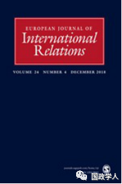
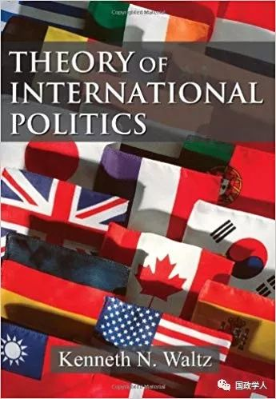

收录于合集 #理论研究 96个

简 介
【作者】 杰克 • 唐纳利（ Jack Donnelly ） ，美国丹佛大学约瑟夫•科贝尔国际关系学院教授，获加州大学伯克利分校博士学位。主要研究领域为国际政治结构理论和国际体系历史的比较分析，以及人权理论与实践。
【编译】 许文婷
** 【校对】** 扎西旺姆、周雨澄、高嘉琳
【审核】 高嘉琳
【来源】 European Journal of International Relations, January 2019, pp.1-27
【期刊】 欧洲国际关系期刊是欧洲政治研究联盟国际关系常设小组（SGIR）的同行评审旗舰期刊，由SGIR和欧洲国际研究协会的联合委员会负责运营。2017年该刊的影响因子为2.545，在国际关系类期刊中排名12/85。

系统、层次与结构理论：沃尔兹的理论并非系统理论（为何这对当今的国际关系很重要）
Systems, levels, and structural theory: Waltz’s theory is not a systemic theory (and why that matters for International Relations today)
杰克•唐纳利（Jack Donnelly）
内容提要
以罗伯特•杰维斯（Robert Jervis）为代表的国际关系学界主流认为沃尔兹的理论是最具系统性的国际政治理论，然而作者提出了相反的看法，认为 尽管沃尔兹的理论 源于 系统性的出发点 ，得出的 却是一 套 分析性 的理论 。 此 转变 来源于其 分析的层次、对结构的定义、 对系统 的认识 及其 对理论的 一些 特殊观点。 作者认为，当今“关系论”正在复兴，并且在国际关系中延续着“系统性”方法，它将实现沃尔兹所描述但未实现的“变革性的贡献”。此前对沃尔兹理论的研究主要关注结构现实主义理论或沃尔兹对无政府状态的描述，而作者聚焦于沃尔兹对系统与结构及相关理论的概念，创新了批评视角。同时，作者认为沃尔兹的理论并非“可以通过修改纠正”，而存在根本性缺陷。此外，作者认为解构沃尔兹的结构现实主义理论也有利于推动真正系统性国际关系理论的发展。

文章导读
1
**
** 系统与集合
根据沃尔兹的定义，系统是“一组互相作用的单元”，其“单元的组织影响它们的行为和互相作用”。也就是说系统并非各个部分的简单相加，其独特性在于可以产生的“系统效果”。
在 标准的 “ 系统论 ” 术语 层面 ，沃尔兹区分了 “ 系统性 ” 和 “ 分析性 ” 两种解释 方法。 分析性的方法通过研究要素来理解整体，它将事物拆解为更小更简单的部分，通过对这些部分的集中研究得出有价值的知识。另一方面，系统性的方法则要求研究者去理解“系统效果”，跳脱出单纯对系统中各单元属性、目的、相互作用的关注。
作者举出了两种系统类别：有机体（organisms）与集合体（assemblages）。集合体中各要素间不存在本质性的联系，彼此间独立或可分离。而有机体中的各要素则有着内在的、本质的、固有的联系，比如心脏之于人体。集合体的框架在解释社会系统时尤为有效，因为社会中的人与团体通常也是保持着相当的独立性。
2
**
** 结构与相互作用的单元
沃尔兹在其理论中使用了“系统由结构和相互作用的单元构成”的表述，其中 三处 有 偷换概念之举 。第一，形容词“结构化的”被名词“结构”替代，这有将概念物化之嫌。第二，构成不同系统的特定元素被无特征的“单元”替代，这抹去了构成某一具体系统的各要素的特性。第三，元素的组织或安排被它们之间的相互作用所取代。对行为（actions）与相互作用和关系的区分是当代“关系论”的核心之一，但沃尔兹的理论化对象并不是关系，而是单元间的相互作用。
更甚者，沃尔兹将系统及其结构描述为对独立行为体的约束机制，并将构成系统的要素拆分为独立的“单元”进行研究。但事实上，社会结构还有着授权乃至建构等多重功能。社会集合体中的各“单元”确实存在着一定程度的自主性，但聚焦于这个方面等同于将系统拆分为小的实体，是一种典型的分析性思路。
因此，作者认为， 沃尔兹 得出的 并非他所 声称 的 国际政治的系统性理论 ，而是一套 “ 有关 国际体系的 ” 分析性 理论。
3
**
** 层次与变量
作者提出， 沃尔兹 的 分析性 理论 ， 与其在 《人 ，国家与战争 》中 率先提出的 分析框架 的层次有关。
层次以不同实体的特征类型为标志，表示的是复杂性（complexity）、组织（organization）、空间尺度（spatial scale）或者社会集合（social aggregation）等方面的区别。根据沃尔兹的理论，国际体系是由两个层次组成的，即结构层次与单元层次，系统论即是为了揭示这两个层次的运行与互动。但沃尔兹在此之外又 ** 生造了一个** ** “** ** 系统** ** 层次** ** ”** ** 的概念** ，并表示“只有结构才是在系统层次上的”，而系统中的各部分则不被纳入系统层次中。
沃尔兹开创了国际关系领域因果层次的分析方法，将组织结构、复杂性或融合性的不同层次作为 ** 因果层次** 对待，在这一框架下，“原因所在的层次”成为了分析时的依据。因果层次分析的核心是国际关系领域中广泛存在的各种自变量，然而，系统论中的变量并非自变量或因变量，而是相互作用的变量，彼此之间有着系统性的相互关联关系。与此相反的是，自变量和因变量之间都是不相关的。由此可得，这种建立在独立元素上的解释分析是一种分析性的方法。
沃尔兹解释政治层次的特别方式进一步强化了该方法的分析属性。最初他使用了“个人-国家-系统”的表述，但后来将其进一步 ** 简化为了** ** 系统** ** 与单元两个层级** ，等于 ** 将** ** 除了系统本身之外的所有元素** ** 归为一类来分析** 。此外，也并没有一种关系能同时适用于所有“单元”。
4
**
** 真正系统性的角度
在分析完沃尔兹理论的基本内容之后，作者笔锋一转，开始介绍其所认为的 “ 真正系统性 的 角度 ” 当做何解。在之前论述的基础之上，他举出了以下三个方面来阐释他的观点。
首先 是 结构性关系 的系统（ systems of structured relations ） 。 作者指出，沃尔兹已经很好地观察到，结构可以“塑造和推动”行为体，但他 ** 只** ** 关注到了相互作用机制** ** 中** ** 的** ** “** ** 选择** ** ”** ** 和** ** “** ** 模拟** ** ”** ** 模式** ** ，** ** 而** ** 忽略了结构性** ** 与关系上的** ** “** ** 塑造** ** ”** ** 模式** ** 。** 结构性的关系也会以特定方式“推动”行为体，例如国家体系约束武力的使用。因此，由元素集合而成的结构性关系是“使系统成为系统”的关键。
其次是组织 的层次 （ levels of organization ） 。 系统性的分析框架以自然产生的组织、集合或复杂性的层次取代了分析性的因果层次，认为世界是由特定种类事物组成，以特定方式相互联系，并产生其他种类事物的分层的系统。每一个层次都以特定种类的自然产生、不可精简的实体和过程为特征。从这一角度来说，国际关系学研究的是社会或政治集合的最高层次。作者认为沃尔兹的“个人- 国家-系统”框架并不是最优的，分析组织层次应当使用经验性的方法，而不应进行理论预设。
此外 ， 作者 认为 系统性 的理论 能够 解决 结构 与能动性的问题 （ agent-structure problem ） 。 从本质上说，“能动者”是脱离了语境的分析要素，而“结构”也并非一个实体，因此“能动者与结构”的问题是概念性的而非本体论的。甚至这个问题本身也并非一个问题，因为组织的层次并不意味着本体论的、因果关系的或是时间上的先后顺序，所有不同的组织结构层次都具有同样的本体论地位，真正应当关注的是某种具体的能动者与其从属的更高级体系之间的关系。从系统论角度看，每一个实体都既是整体也是部分，在有关国家和国际关系的分析中也是如此。因此，争论应当从何种角度出发分析问题没有意义，而应结合具体解决问题的实践而定。

5
**
** 沃尔兹的“结构理论”
在分析的下一个阶段，作者 从 “ 结构 ” 和 “ 理论 ” 两个 角度 对 沃尔兹的 “ 结构 理论 ” 进行了 解构 。
在重新定义系统的同时，沃尔兹也将分析性和系统性的方法分别定性为“还原论的”（Reductionist Approach）和“结构性”的。沃尔兹经常在他的分析中使用一种“弱化了的还原论”(reductionism in a weaker sense)，即只考虑国际现象单元层面的原因。这种分析方法把“单元”和“结构”分成了两个不同的相互作用的层次，这也决定了他的理论不可能是“系统性的”。沃尔兹认为，系统理论只是一种角度，而非主题本身。但这样实际上就把“系统性的分析”和“对系统的分析”混为了一谈。 沃 尔兹 把 分析 性和系统性的方法等同于 “ 还原论 的 ” 和 “ 结构性 的 ” 方法 ， 掩盖 了他的理论 依然是分析性的而非系统性的 这一 事实 。
沃尔 兹 理论 的缺陷更明显地表现在 其 对国际体系结构的描述上。 他认为， ** 系统理论应当** ** “** ** 只考虑** ** 国家** ** 的** ** 能力** ** ”** ，这使其既不再是国家自身，也不能成为系统中的一个部分，这就背离了系统理论本身。系统理论并不能只讲“系统”而将其与构成它的要素相分离，系统是通过对构成其要素间的安排而存在的。
就理论本身而言，沃尔兹对理论的某些理解也导致他采取 了 分析性的 方法 。 沃尔兹认为 ** “** ** 理论** ** 应当** ** 把** ** 某一领域** ** 孤立来看** ** ，** ** 以作** ** 理性的** ** 分析** ** ”** ，然而孤立某一调查对象的方式可能面临着把系统性的整体拆散为部分来研究的风险。像沃尔兹这样将孤立的方法用于分析一个系统，那得到的必定是分析性的解释。
沃尔兹 本人对理论 “ 优雅性 ” 的 美学 偏好 ，又把 他 对 简化 的追求推向了 矫枉过正 的地步。 有成效的简化本身并无不妥，但如果将其作为完全的描述，那就是有问题的了。系统理论本身就需要描述性的主张，一个从根本上就不准确的结构解释就是错的，或者充其量说，是“分析性的”。沃尔兹的理论，与他所追求的正好相反，既不“复杂”，也不具“组织性”。
沃尔兹 的理论偏好还体现在他 对 自然科学的崇拜上 。 他认为社会科学应当仿效以经典物理学为代表的自然科学，一套优雅的理论应当“去除所有的现实，拥有物理般的思维”。但经典物理学对系统性理论来说则是一个糟糕的典范，因为它的主流研究方法恰好是分析性的。
沃尔兹 认为 解释性的理论等于因果理论，这一理解也导致了分析性的方法 ，其原因已在上文阐释说明。 ** 他** ** 还认为** ** 理论解释必须** ** 有** ** “** ** 其他条件** ** 不** ** 变** ** ”** ** 这一** ** 成立** ** 前提，** ** 这** ** 一预设自然地就** ** 以** ** 分析性的方式** ** 分离了** ** 不同的元素** ，因为在系统中，“其余的因素”不可能始终保持一致或不变。事实上，在《国际政治理论》这本书中存在着系统性思想的苗头，但仅限于在第一章的介绍部分。之后，在结构理论的构建过程中，沃尔兹就完全用结构层次的因果分析取代了对系统影响的关注。
谈及系统性国际关系理论的范围与特性时，需要明确的是，以系统性方式研究系统需要具体的社会科学实践。因此 在 研究 国际体系时，我们需要的也是对 具体 各 体系 的比较政治分析。 我们应当对国际政治结构的基本原理有更好的了解，同时也不能指望一套系统性的理论能直接或单独解释某种行为，它研究的是行为体各方面的要素。
**6
** 国家
**
**
**
**
、系统与环境
沃尔兹 的分析性理论 也 来源于他 “ 个人主义 地 ” 从 部分角度来看待系统 。 例如 ** 他宣称** ** 国际政治体系** ** “** ** 从** ** 源头上说就是** ** 个人主义的** ** ”** ，但是以系统论的角度，这个说法要么是错的，要么也是不连贯的。关于一个系统是如何形成的问题是经验性的，而非本体论的或概念性的或理论性的问题。
沃尔兹的这种分析性的个人主义或云统计学者的视角甚至让他 ** 抛弃了系统与环境之间最基本的区别** 。“环境”被认为是系统之外的东西，更广义而言，外部约束是环境性的而非系统性的，它产生的是环境性而非系统性的影响。此外，沃尔兹是在用国家的视角看待“国际体系”，他把一切不属于国家内部的事物都不加区分地归类为“外部”，这样产生的也只能是有关国家体系而非国际体系的叙述。
7
** ** ** ** 结构现实主义和结构理论****
**
**
最后 ，作者 提出沃尔兹 放弃了 系统性的 方法是因为 它 仅仅是 为了实现非 “ 还原论 ” 现实主义 理论的一种 途径 。 沃尔兹的《人，国家与战争》确立了无政府状态能够解释国际关系中的一些关键要素，系统性的思考只是更严格地阐述了这种实质性的见解。可以看出，沃尔兹所坚持与重视的是对层次和无政府状态的阐释， 他 对一 套 系统性的理论 本身 事实上没有那么大的兴趣。 沃尔兹对国际政治结构的介绍与解释对于将无政府状态确立为一套由外而内的理论中的主要解释变量来说足够充分，这对其作为一种“国际政治理论”而言已然足够了。
8
** ** ** ** 沃尔兹、系统与国际关系研究中“关系”的回归****
系统理论与基于独立变量的因果理论并无高下之分，但它能提供对于分析性方法无法触及的那一部分世界的洞察。因此， 回归到 沃尔兹最初 系统性 解释 的愿景是 一种正确的方向。
《国际政治理论》一书唤起了对系统性国际理论相当可观的需求。近二十年来，真正的系统性国际关系的主体，开始形成且产生了有意义的丰硕的成果，这一广泛使用的研究方法常被称作 “ 关系论 ” （ relationalism ）。
关系 论者的显著特征是 其 观点与 “ 本体论 ” （ substantialism ） 或 “ 本质主义 ” （ essentialism ） 对立 ，它关注的不是构成事物的实质，而是事物间的关系。与沃尔兹狭隘的结构主义截然相反的是，关系论对系统与关系的研究持更开放多元的态度。关系论中最常见的两种分析框架是 网络学说 (Network theory) 与场论 (Field theory) 。场论的本质是通过依赖相对于他人的立场来解释个人行为的规律性，而网络学说也同样强调联系的模式，从而产生对结构的位置或关联性的根本性认识。除此之外，还有整体- 部分（wholes-parts）和关系-实质(relations-substances)的分析框架作为补充。
在全文的最后，作者进一步阐述了系统观点所产生的差异，并主张对关系主义的系统性理解。作者强调 关系 也 必须 建立 在 “ 被联系 ” 的 实体之上，否则依然是空谈。 关系论的出现是为了平衡国际关系领域对本质性和分析性变量的过分强调。而从操作上来说，关系论者并不贬低实体的重要性，他们认为关系论是一种方法论而不是本体论。因此， 关系论将 实现 沃尔兹 曾 承诺的 “ 系统性 ” 理论 ，为国际关系 理论 开 创 一个更为多元的未来。
_ ** _ 本文由国政学人微信平台独家编译首发**
更多阅读
【重磅速递】约瑟夫·奈：美国霸权的兴衰：从威尔逊到特朗普 | 国政学人
【重磅推荐】巴里·布赞：英国学派视角下的中国崛起 | 国政学人
【重磅速递】米尔斯海默：注定失败：自由主义国际秩序的兴衰 | 国政学人
【国际组织】IO杂志：联合国维和行动的武力运用问题研究 | 国政学人
【国际秩序】为什么自由主义国际秩序理念将美国外交政策引入歧途？| 国政学人
【关系理论】“关系”：世界政治关系理论的中国话语 | 国政学人
【百年国关】历史在国际社会中的应用：从巴黎和会到现在 | 国政学人
【英国学派】张勇进：中国与全球国际社会中的自由主义等级制：实力与对规范变迁的协商 | 国政学人
【地区秩序】论经济实力的可转化性：中国经济崛起与东亚安全秩序 | 国政学人
【中俄关系】不得已的伙伴：系统-单元动态与中俄关系 | 国政学人